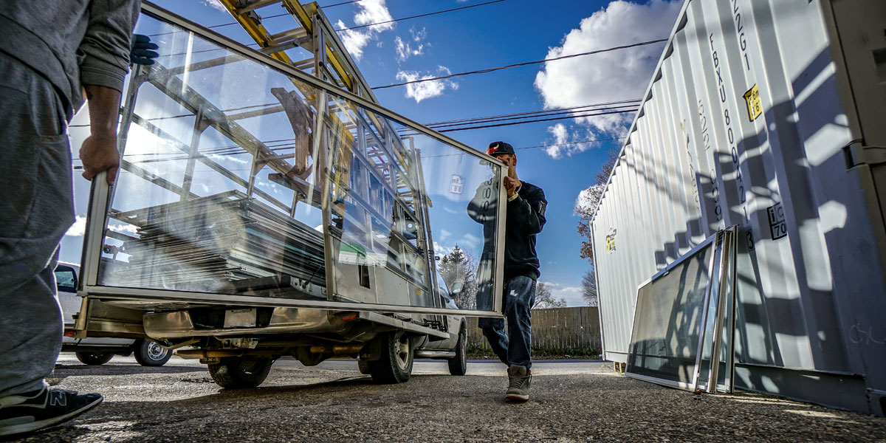

Доставка
Доставим быстро и качественно!
Перевозка грузов и стеклянных изделий
Стойка пирамида - перевозка стекла и оконных изделий

На сегодняшний день особенное распространение приобрели автомобильные перевозки. Люди
часто заказывают грузовой автотранспорт для различных перевозок груза. Бывает множество
типов грузового автотранспорта, подходящего для различных ситуаций и разновидностей
груза. Наша компания осуществляет доставку грузов достаточно быстро и качественно.Для
постоянных клиентов стоимость транспортировки может быть более низкой.
Часто при перевозки стекла или другого груза требуется применение дополнительной помощи
при погрузки или разгрузки. Наша компания предоставляет профессиональных грузчиков,
которые аккуратно погрузят и разгрузят автотранспорт, гарантируя сохранность
перевозимых вещей.